A frame of the finished demo: Blender render, composited in After Effects.
Fly. Fire. Break. Composite.
Start with the theory deck. Every screenshot is the real program, with orange boxes on what to click.
My supports
Turn on any help you want. Your teacher may have set some for you. They change how the guide helps, not what is assessed.
Shot brief
Eight seconds in a canyon.
Deliver a chase shot: a fighter pursues an X-wing through a canyon and is shot down by a second X-wing. Build it in Blender, finish it in After Effects, then make the change your director asks for.
You will hand in
Your three pass folders (beauty, mist, glow)
A screenshot of your After Effects layer stack
The finished MP4 and the director’s version
A three-decision explanation and credits
What your teacher gives you
The Canyon_Dogfight folder: canyon_start.blend, its textures, PewPew_classroom.zip, and the explosion clips. The clips are licensed stock footage: use them in your project, but do not upload the clips themselves anywhere.
On a film this shot passes through four departments. Layout flies the ships and the camera. FX adds lasers and destruction. Lighting renders the passes. Compositing builds the final picture. You do all four, in that order, and the hand-off between them (the passes) is the part most beginners never see.
Knowledge first
Why this works.
Open the theory deck for the narrated version with checkpoint questions. In short:
One path, many riders
A curve plus Follow Path constraints turns a chase into a few numbers that stay in step.
Speed is things passing close
Low between walls, banking, a camera that aims ahead, motion blur.
Passes
Beauty is the picture. Mist is distance. Lights-off is everything that glows.
Blend modes and mattes
Add and Screen add light. A luma matte lets one picture decide where another shows.
Design principles in the shot
Movement: everything leads the eye down the canyon. Contrast: green and red bolts against orange rock. Emphasis: the flash and fireball on the hit.
What this assesses
Skills you will show.
Skill (ID)
Where you show it
Staging, shot design and film grammar · AN-STG-01
Steps 2–4, 9
Keyframes and Graph Editor (3D) · BL-KEY-01
Steps 3, 4, 8
Timing and spacing · AN-TIM-01
Steps 6–8
Simulation and particles · BL-FX-01
Steps 5–7
Render · BL-RND-01
Steps 10, 11
Integration: grounding, light and colour match · VP-INT-01
Steps 13–16
Critique and refinement · GD-CRIT-01
Step 17
Primary achievement evidence: the director’s change (step 17). Guided steps, recall questions and supports are recorded separately from achievement. Shot-library option in sprint mm12-26-s08. Skill IDs AN-, BL- and VP- were approved on 3 Oct 2026 and are being registered.
Session A · Lesson 1 · Blender
Fly the canyon.
One curve down the canyon. The X-wing, the fighter and the camera all ride it, a little behind one another.
TODAYTheory deck (15 min), open the starter and draw the path (20 min), ships on the path (20 min), chase camera (15 min).
01
Open the starter file and look around
IN SHORTOpen; save a copy; camera view; Rendered; find the objects.
READ ALOUD
DOCUMENT: canyon_start.blend (from your teacher) SELECT: Nothing yet: just look TOOLS / ROUTE: File › Open · Numpad 0 · Z › Rendered
Copy the Canyon_Dogfight folder from your teacher to your drive. Open canyon_start.blend. Save a copy straight away: File › Save As › dogfight_YOURNAME.blend.
Press Numpad 0 to look through the camera. Hold Z and choose Rendered to see the real light.
In the Outliner (top right) find: Canyon, Hero X-wing, TIE fighter, Rescuer X-wing, Rescue path, Planet, Sun, Camera.
Check the timeline reads Start 1, End 216, and the frame rate is 24 fps (Output properties).
The finished demo: Blender render, composited in After Effects (9 seconds, three cameras).
Action by action: what to click (orange boxes), and what you should see
1Numpad 0, then Z › Rendered.
Click
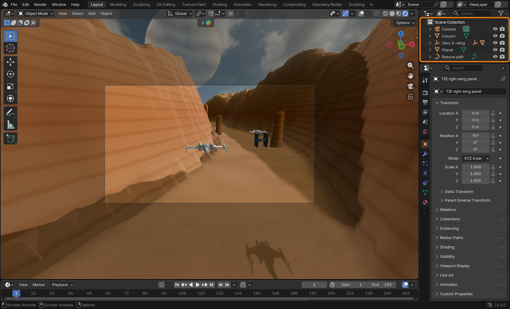
The starter through the camera: canyon, two of the parked ships, planet. The Outliner (box) lists the objects.
STEP CHECKLIST
GLOSSARY
Outliner: The list of everything in the scene
Rendered view: The viewport showing real lights and materials
WHYThe starter gives you a finished world so the lessons can be about motion and compositing. Nothing in it is animated yet.
CHECKYou can see the canyon, three parked ships and a planet through the camera, in Rendered view.
FIXPink canyon or grey sky? The textures folder is missing: copy the whole Canyon_Dogfight folder, not just the .blend.
WORKED EXAMPLE · DIFFERENT OBJECTAny downloaded scene: open, save a copy, find the camera and the main objects before changing anything.
STRETCH (AFTER THE CHECK PASSES)Orbit out of the camera (middle mouse) and fly along the canyon to see its bends.
Method basis: V1 · H1. Values and sequence are authored for this project.
02
Draw the flight path
IN SHORTTop view; add Path; Edit Mode; move and extrude points; raise to 17 m and weave; Tilt at bends.
READ ALOUD
DOCUMENT: Your dogfight file SELECT: A new Path curve TOOLS / ROUTE: Shift+A › Curve › Path · Tab · G · E · Ctrl+T
Press Tab (Edit Mode). Select all (A), rotate 90° (R Z 90) and scale up (S 60) so it runs along the canyon.
Move points with G so the curve sits in the middle of the canyon floor. Select the end point and press E to extrude new points until the path runs the whole canyon: about 30 points, one every 60 m.
Switch to side view (Numpad 3) and lift all points to about 17 m high (A, then G Z 17). Wobble a few up and down by 5 m, and weave the line about 10 m left and right so it passes close to the rock spires.
For each bend: select the points in it, open the sidebar (N) › Item, and set Tilt to between −45° and 45° so ships lean into the turn. Press Tab to leave Edit Mode.
Action by action: what to click (orange boxes), and what you should see
1Shift+A › Curve › Path.
Click
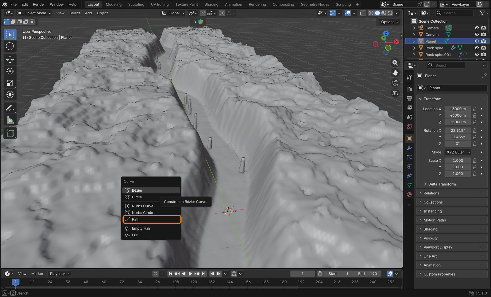
The Add › Curve menu: Path (box).It should look like this
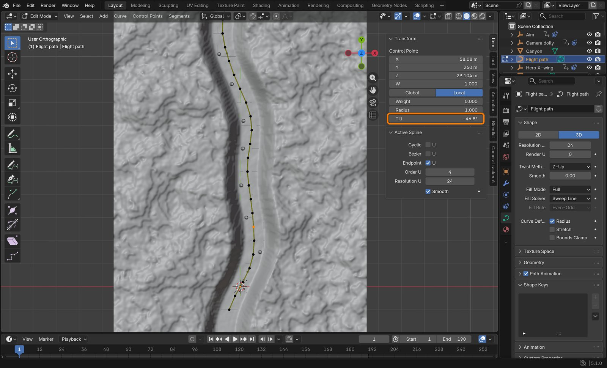
Top view, Edit Mode: the path down the canyon. One point selected: Tilt −46.8° (box).
What went wrong when we built the demo: the demo path was generated from the canyon’s own centre line by a script, so it is smoother than a hand-drawn one will be. Yours does not need to match it: it needs to stay inside the canyon.
STEP CHECKLIST
GLOSSARY
Path: A curve objects can travel along
Tilt: How much the curve leans at a point
WHYOne curve is the whole flight plan. Tilt is how the curve stores banking.
CHECKA smooth line down the middle of the canyon, about 17 m up, close to the spires but never touching a wall or a spire.
FIXPath cuts through a wall in a bend? Add a point there (select two neighbours, right-click › Subdivide) and move it.
WORKED EXAMPLE · DIFFERENT OBJECTA roller-coaster track or a racing line is drawn the same way.
STRETCH (AFTER THE CHECK PASSES)Make one section dip to 10 m so the ships skim the floor.
Method basis: B1. Values and sequence are authored for this project.
03
Put the X-wing on the path
IN SHORTZero the location; Follow Path; target; Fixed Position + Follow Curve; key 0.100 → 0.700; Linear.
Target: Flight path. Tick Fixed Position and Follow Curve. Forward Axis −Y, Up Axis Z.
Frame 1: set Offset Factor 0.100, hover over it and press I (it turns yellow). Frame 216: set 0.700, press I.
Open the Graph Editor, select the Offset Factor curve, press T › Linear, so the speed is constant. Press Space to play.
Action by action: what to click (orange boxes), and what you should see
1Constraints tab › Add Object Constraint.
Click
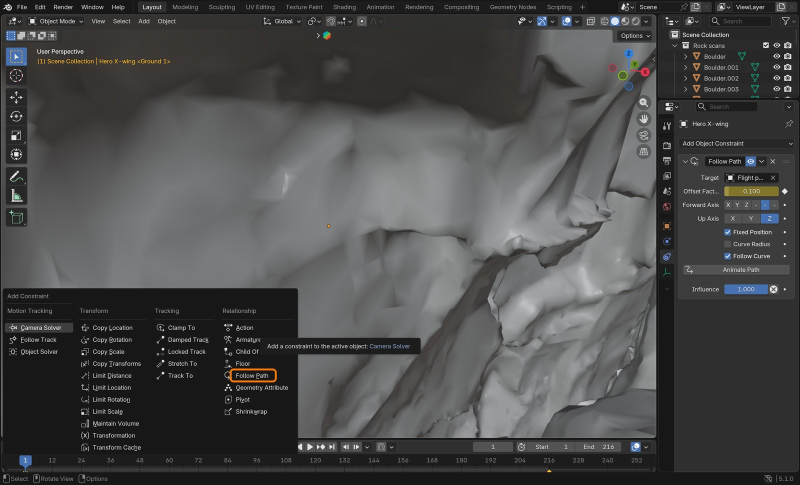
The constraint menu: Follow Path under Relationship (box).It should look like this
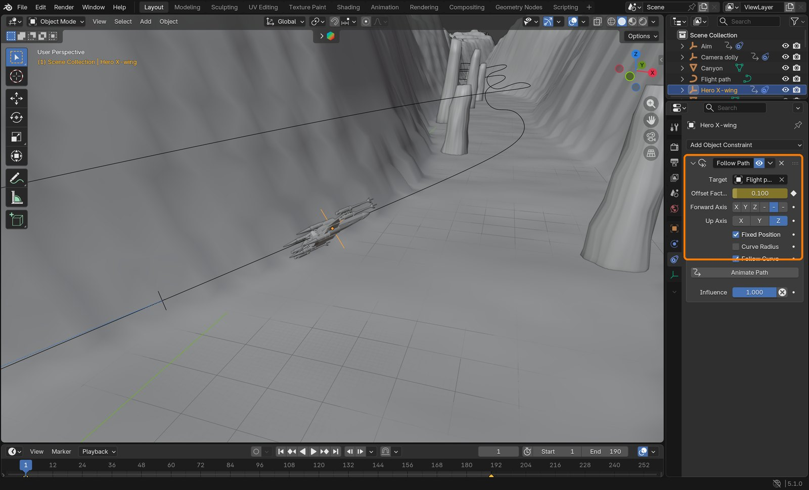
Frame 1: Target Flight path, Offset Factor 0.100 keyed, Fixed Position and Follow Curve ticked (box).
2Go to frame 216 and key the end value.
Click
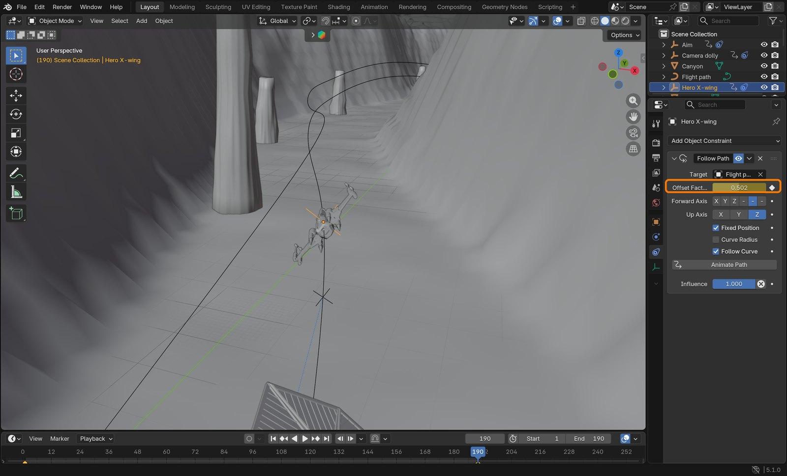
Frame 216: Offset Factor 0.700 (box).
Object
Setting
Value
Hero X-wing
Offset Factor, frame 1 → 216
0.100 → 0.700
Hero X-wing
Forward Axis / Up Axis
−Y / Z
STEP CHECKLIST
GLOSSARY
Constraint: A rule that controls an object
Offset Factor: Position along the path, from 0 to 1
WHYOffset Factor is how far along the path the ship is. Keying it at the start and the end flies the whole route at a steady speed.
CHECKThe X-wing flies nose-first down the canyon and leans in the bends.
FIXFlying backwards or sideways? Change Forward Axis. Speeds up and slows down? The keyframes are still Bezier: set them to Linear.
WORKED EXAMPLE · DIFFERENT OBJECTA train on a track, or a camera on a crane move, uses the same constraint.
STRETCH (AFTER THE CHECK PASSES)Change the end value to 0.8: what happens to the speed?
Method basis: B1. Values and sequence are authored for this project.
04
Add the fighter and a chase camera
IN SHORTTIE on the path 0.077→0.677; dolly 0.061→0.661; Aim 0.087→0.687; parent camera; Track To Aim.
READ ALOUD
DOCUMENT: Your dogfight file SELECT: TIE fighter, two empties, the Camera TOOLS / ROUTE: Follow Path again · Shift+A › Empty · Ctrl+P · Track To
TIE fighter: zero its location, add Follow Path exactly as before, but key Offset Factor 0.077 → 0.677. If it flies backwards, switch Forward Axis between Y and −Y.
Shift+A › Empty › Plain Axes, name it Camera dolly. Follow Path, Forward Axis Y, keyed 0.061 → 0.661.
Another empty, Aim: Follow Path, Forward Y, keyed 0.087 → 0.687. It rides between the two ships.
Select the Camera, then Shift+click Camera dolly, Ctrl+P › Object. Set the camera’s Location to 4, 0, 3 and clear its rotation (Alt+R).
Camera › Constraints › Track To: Target Aim, Track Axis −Z, Up Y. Numpad 0 and play.
Action by action: what to click (orange boxes), and what you should see
1Three things on one path at frame 60, seen from above.
Click
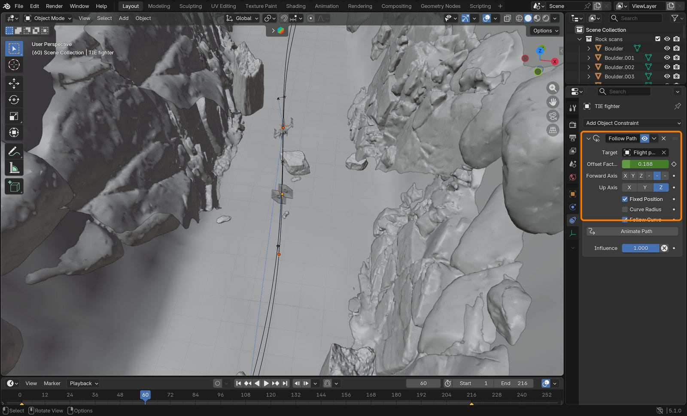
X-wing ahead, fighter behind, camera dolly last. The fighter’s constraint is shown (box).
2The camera: child of the dolly at 4, 0, 3, with Track To on Aim.
Click
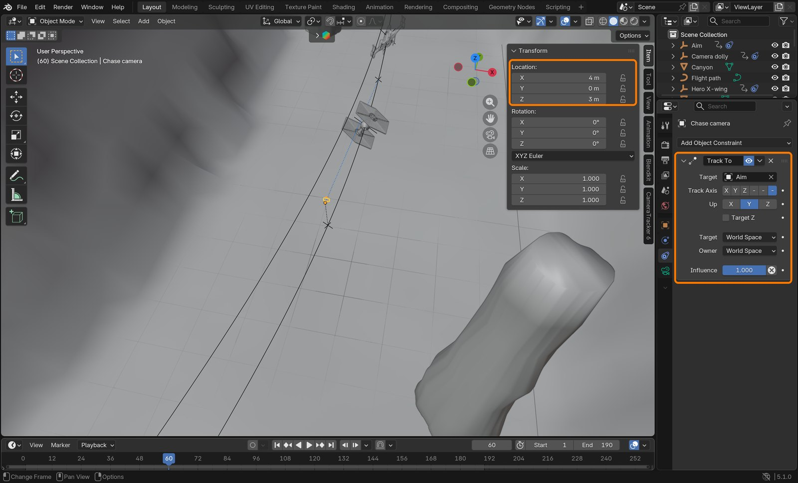
Boxes: Location 4, 0, 3 and the Track To constraint.It should look like this
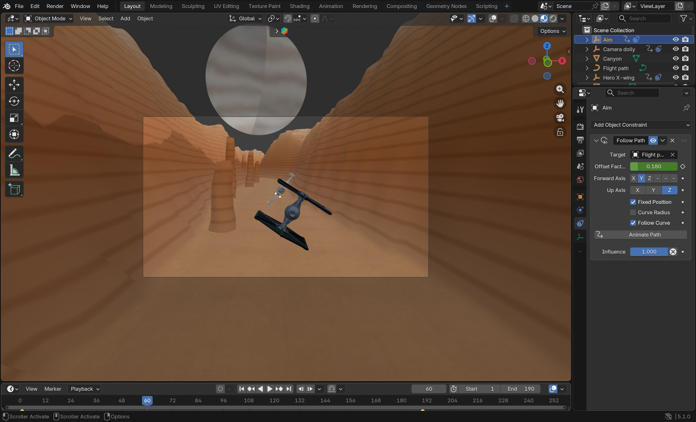
Through the chase camera at frame 60.
Object
Setting
Value
TIE fighter
Offset Factor
0.077 → 0.677
Camera dolly
Offset Factor
0.061 → 0.661
Aim
Offset Factor
0.087 → 0.687
Camera
Location (child of dolly)
4, 0, 3
STEP CHECKLIST
GLOSSARY
Empty: An invisible helper object
Track To: A constraint that keeps an object pointed at a target
WHYEverything shares one path, so the chase holds together through every bend. The camera aims ahead of the fighter, which lets the fighter move around in the frame.
CHECKThrough the camera: the fighter fills the middle of the frame with the X-wing ahead of it, and both stay in shot to frame 216.
FIXFighter out of frame? Check all four end values are exactly 0.600 more than their start values.
WORKED EXAMPLE · DIFFERENT OBJECTCar chases and drone shots are built the same way: a dolly on the path, a camera that aims at a helper.
STRETCH (AFTER THE CHECK PASSES)Move the camera to 6, 0, 1.5 for a lower, more dramatic angle.
Method basis: B1 · B2. Values and sequence are authored for this project.
Session B · Lesson 2 · Blender
Open fire.
The PewPew add-on turns one button press into a laser bolt, a muzzle flash and sparks where it lands.
TODAYRecall (5 min), install PewPew and add emitters (20 min), fire five bursts (20 min), the rescuer’s kill shot (25 min).
05
Install PewPew and put emitters on the fighter’s guns
Recall first (from last lesson, no peeking):
What does Offset Factor 0 mean? What does 1 mean?
Why do the X-wing and the fighter keep the same gap for the whole shot?
What does the camera aim at, and why not at the fighter itself?
Say or write your answers, then check them against your file.
IN SHORTInstall the add-on; Add Emitter; parent to the fighter; place at the guns; set speed, life, size, colour.
READ ALOUD
DOCUMENT: Your dogfight file SELECT: TIE fighter TOOLS / ROUTE: Edit › Preferences › Add-ons › Install from Disk · N sidebar › PewPew › Add Emitter
Edit › Preferences › Add-ons › the ⌄ menu top right › Install from Disk › pick PewPew_classroom.zip from your teacher’s folder. Tick it on.
In the 3D Viewport press N and click the PewPew tab. Type the name TIE_laser_L and click Add Emitter.
Select the new emitter, then Shift+click TIE fighter, Ctrl+P › Object (Without Inverse). Set the emitter’s Location to −0.45, −3.2, −0.6 and Rotation to 0.
Do it again for TIE_laser_R at 0.45, −3.2, −0.6. (If your fighter’s Forward Axis is Y, use +3.2 and Rotation Z 180°.)
Select an emitter. In the PewPew tab open Laser settings: Speed mode Distance per frame, Speed 17.5, Life 22, size 1.6, 16, 1.6, colour green. Click Copy Settings to Selected with both emitters selected.
Action by action: what to click (orange boxes), and what you should see
1N › PewPew tab: name the emitter and click Add Emitter.
Click
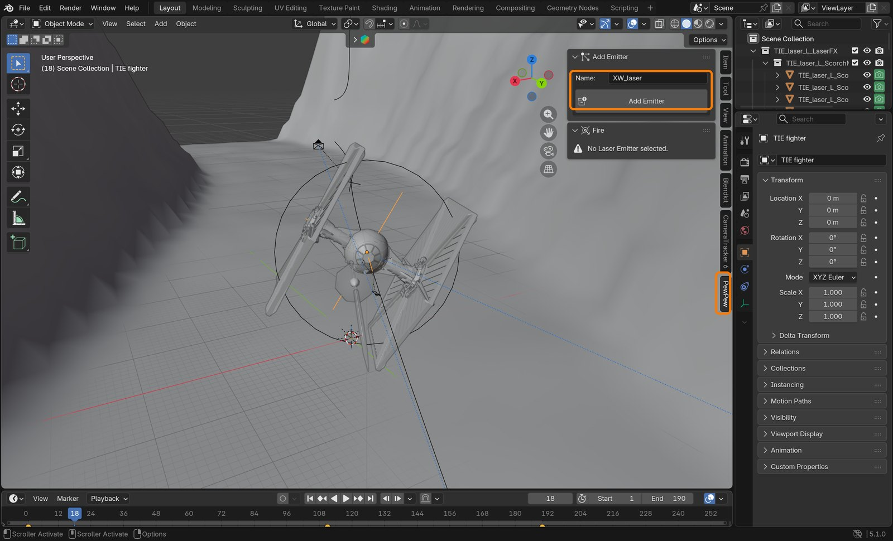
Boxes: the PewPew tab on the sidebar edge, and Name + Add Emitter.It should look like this
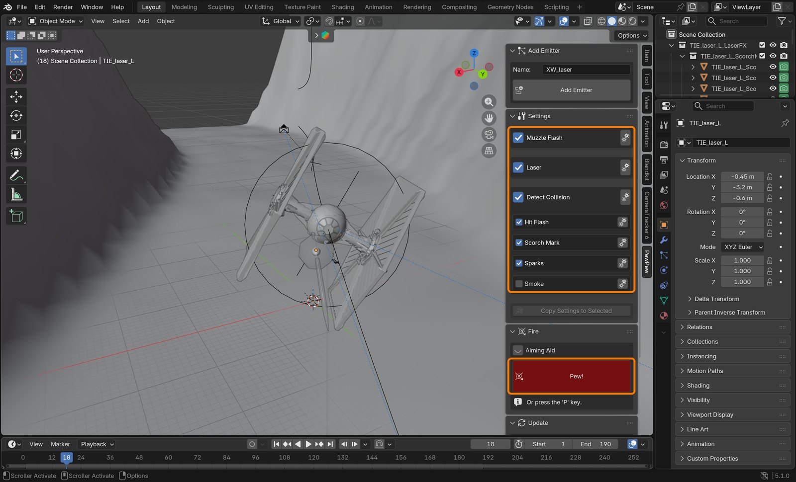
With an emitter selected the Settings and the red Pew! button appear (boxes).
What went wrong when we built the demo: the add-on as downloaded could not find its own laser objects on a Mac (its file paths were written for Windows). The classroom zip has that one line fixed and works on both.
STEP CHECKLIST
GLOSSARY
Add-on: An extra tool installed into Blender
Emitter: The object a laser is fired from
WHYThe emitter is the gun barrel. Parenting it to the ship means it flies and banks with the ship. Its −Y axis is the direction it shoots.
CHECKTwo small emitters sit just in front of the fighter’s cockpit ball and move with it when you scrub.
FIXNo PewPew tab? The add-on is not ticked in Preferences. Emitter left behind when you scrub? It is not parented.
WORKED EXAMPLE · DIFFERENT OBJECTAny tool add-on installs the same way: Preferences › Add-ons › Install from Disk.
STRETCH (AFTER THE CHECK PASSES)Try the blue preset and compare.
Method basis: P1. Values and sequence are authored for this project.
06
Fire five bursts at the X-wing
IN SHORTAlternate emitters every 4 frames: 10–26, 52–64, 82–90, 104–116, 124–128; play; delete mistakes.
READ ALOUD
DOCUMENT: Your dogfight file SELECT: The two TIE emitters TOOLS / ROUTE: Timeline · PewPew › Pew! (or P)
Select TIE_laser_L. Go to frame 10 and click Pew! A bolt appears and flies forward.
Select TIE_laser_R, frame 14, Pew! Keep alternating left and right every 4 frames: 18, 22, 26.
Second burst: frames 52, 56, 60, 64. Third: 82, 86, 90. Fourth: 104, 108, 112, 116. Fifth: 124, 128. Eighteen shots in all.
Play it through the camera. Bolts that reach a canyon wall make sparks and a scorch mark there: that is Detect Collision working.
Fired on the wrong frame? Go to that frame, and under Update click Delete for that laser.
Action by action: what to click (orange boxes), and what you should see
1Frame 56, through the camera, mid-burst.
Click
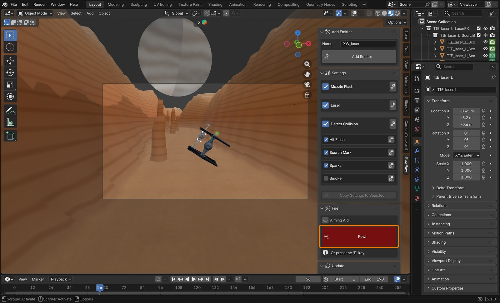
A green bolt in flight; the Pew! button (box).
STEP CHECKLIST
GLOSSARY
Burst: A short group of shots
Collision: When the bolt meets a surface
WHYBursts with gaps read as a pilot firing. A constant stream reads as a machine. The misses also show how fast the X-wing is dodging.
CHECKGreen bolts leave the fighter in five bursts and fly past the X-wing; some spark on the rock.
FIXBolts fly backwards? The emitter’s −Y points the wrong way: rotate it 180° on Z.
WORKED EXAMPLE · DIFFERENT OBJECTMuzzle flashes on a filmed prop gun are timed in bursts the same way.
STRETCH (AFTER THE CHECK PASSES)Aim one burst so it hits a rock spire just as the X-wing passes it.
Method basis: P1. Values and sequence are authored for this project.
07
The rescuer’s kill shot
IN SHORTRescuer on Rescue path 0.079→0.607; emitter + Damped Track to TIE core; fire 146, 149, 152; note the hit frame.
READ ALOUD
DOCUMENT: Your dogfight file SELECT: Rescuer X-wing, a third emitter TOOLS / ROUTE: Follow Path on Rescue path · Add Emitter · Damped Track · Pew!
Rescuer X-wing: zero its location. Follow Path, Target Rescue path (it runs the other way, higher up), Forward −Y, Fixed Position, Follow Curve. Key Offset Factor 0.079 → 0.607, Linear.
Scrub to about frame 164: the rescuer should pass over the fighter. If it passes much earlier or later, slide both key values up or down by the same amount.
Add an emitter XW_laser, colour red. Parent it to the rescuer (Without Inverse), Location 0, −7.5, −0.3.
Emitter › Constraints › Damped Track: Target TIE core, Track Axis −Y. It now always aims at the fighter.
Fire at frames 146, 149, 152. Play slowly: note the frame the first red bolt reaches the fighter. In the demo it is 155. Write yours down: it is your hit frame.
Action by action: what to click (orange boxes), and what you should see
1The XW_laser emitter with Damped Track on TIE core.
Click
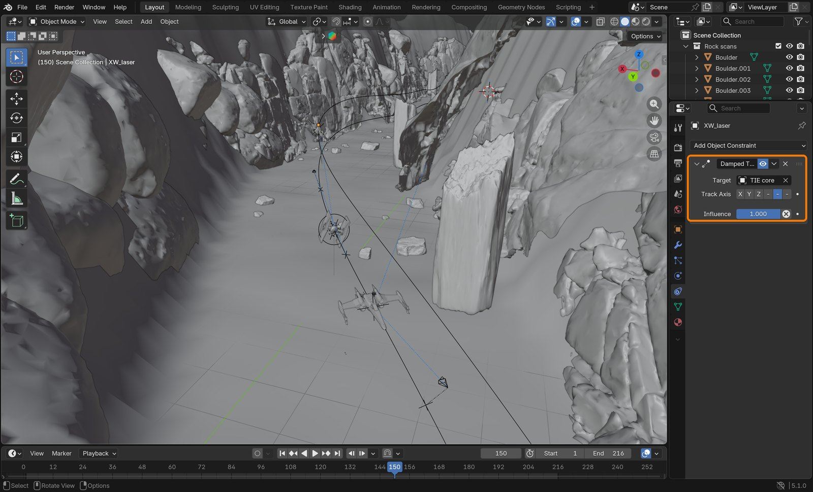
Box: Damped Track, Target TIE core, Track Axis −Y. The rescuer is above and ahead of the fighter.It should look like this
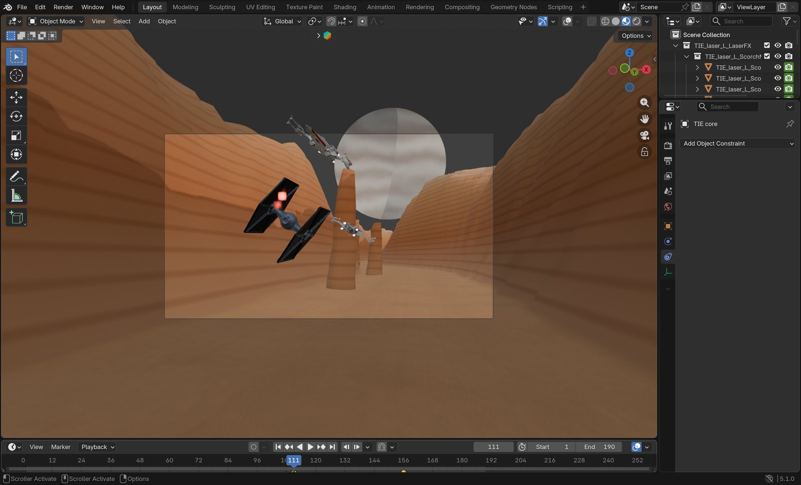
Frame 155 through the camera: the red bolts land on the fighter.
STEP CHECKLIST
GLOSSARY
Damped Track: Keeps one axis pointed at a target
Hit frame: The frame the first bolt lands
WHYAn emitter that tracks its target cannot miss, so you only choose when to fire. The bolt’s travel time decides the hit frame, and everything in the next lesson is timed from it.
CHECKThree red bolts come from ahead and strike the fighter; you have a hit frame written down.
FIXRed bolts pass through the fighter? Detect Collision is off for this emitter: tick it and fire again.
WORKED EXAMPLE · DIFFERENT OBJECTA spotlight that follows an actor uses the same Damped Track.
STRETCH (AFTER THE CHECK PASSES)Fire one early shot at frame 140 that misses (untick the constraint for it).
Method basis: B2 · P1. Values and sequence are authored for this project.
Session C · Lesson 3 · Blender
Break it, then render the passes.
The fighter comes apart with six keyframes. Two more cameras turn one take into an edited sequence. Then you render the shot three ways for After Effects.
TODAYRecall (5 min), break-up and flash (20 min), cameras and cuts (15 min), beauty render (10 min), mist and lights-off passes (20 min).
08
Break the fighter apart
Recall first (from last lesson, no peeking):
Which axis of a PewPew emitter does the bolt leave from?
What does Damped Track do for the rescuer’s emitter?
What is your hit frame, and how did you find it?
Say or write your answers, then check them against your file.
IN SHORTKey the 3 pieces at the hit frame; key the table values 45 frames later; slow the wreck; key the flash; slide the camera.
READ ALOUD
DOCUMENT: Your dogfight file SELECT: TIE core, TIE left wing, TIE right wing TOOLS / ROUTE: N sidebar › Item · I over Location and Rotation · Light › Power
Go to your hit frame. Select TIE left wing. In N › Item hover over Location and press I, then over Rotation and press I. Do the same for TIE right wing and TIE core.
Go 45 frames later. Type the values from the table below into Location and Rotation for each piece and key them (I). The pieces are in the model’s own units, which is why the numbers are big.
Slow the wreck: TIE fighter › Follow Path › at the hit frame press I on Offset Factor; at frame 216 change it to 0.654 and press I.
Shift+A › Light › Point, name it Explosion flash, colour orange, parent it to TIE fighter at 0, 0, 0. Key Power: 0 one frame before the hit, 3,000,000 W on the hit, 600,000 six frames later, 0 twenty frames later.
Camera: key its Location 4, 0, 3 ten frames before the hit and 16, 0, 9 twelve frames after, so it slides aside and skims past the wreck.
Action by action: what to click (orange boxes), and what you should see
145 frames after the hit: TIE left wing with its keyed values.
Click
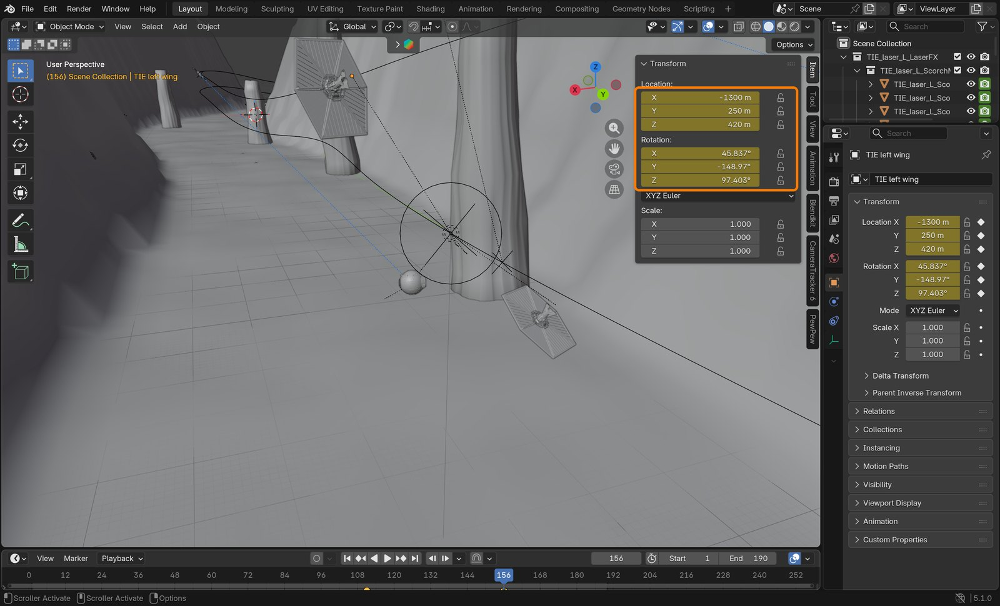
Box: Location −1300, 250, 420 and Rotation 45.8°, −149°, 97.4°, all keyed (yellow).
2The flash light at the hit frame.
Click
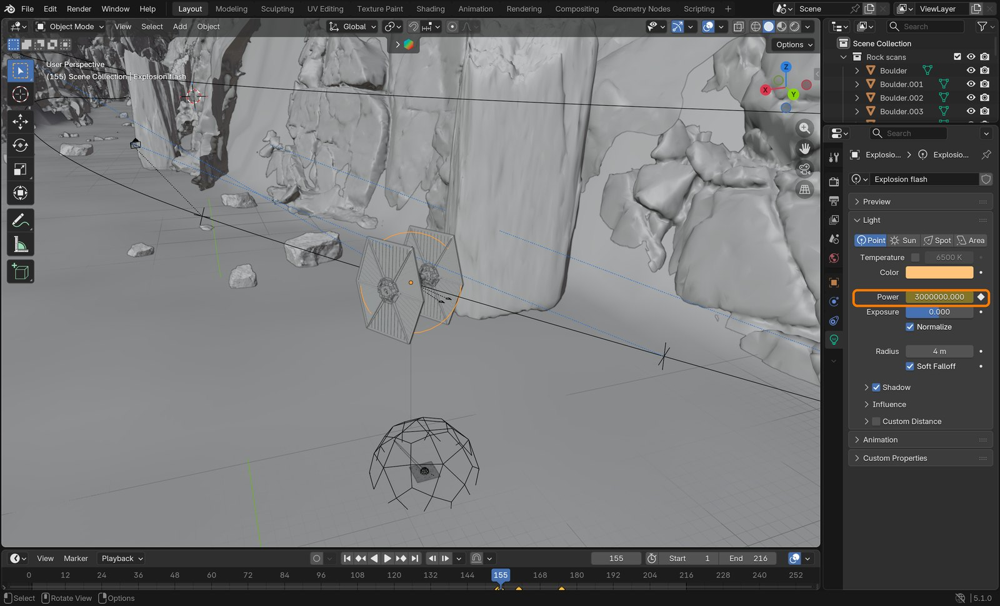
Box: Power 3,000,000 W, keyed.
Object
Setting
Value
TIE core
Location / Rotation
0, 0, −500 / 126°, 34°, 23°
TIE left wing
Location / Rotation
−1300, 250, 420 / 46°, −149°, 97°
TIE right wing
Location / Rotation
1400, 300, 150 / −69°, 126°, −115°
STEP CHECKLIST
GLOSSARY
Keyframe: A stored value at a frame
Power: How bright a light is, in watts
WHYThree big pieces tumbling apart read clearly at speed. The flash light throws orange on the canyon walls, which is what convinces the eye an explosion happened there.
CHECKOn the hit frame the canyon flashes orange; the wings spin away; the camera passes the wreck without flying through it.
FIXPieces jump before the hit? You forgot the keyframe on the hit frame itself, so they drift from frame 1.
WORKED EXAMPLE · DIFFERENT OBJECTA dropped glass or a collapsing wall can be faked with a few big pieces and keyframes.
STRETCH (AFTER THE CHECK PASSES)Add a fourth piece: separate one wing panel (Edit Mode, L, P) and send it spinning toward the camera.
Method basis: B1. Values and sequence are authored for this project.
09
Add two more cameras and cut between them
IN SHORTGround camera with Track To; Nose dolly + Nose camera; markers at 1, 46, 98, 136; bind a camera to each.
READ ALOUD
DOCUMENT: Your dogfight file SELECT: Two new cameras, four timeline markers TOOLS / ROUTE: Shift+A › Camera · Track To · Timeline › M (marker) · Marker › Bind Camera to Markers (Ctrl+B)
Ground camera. Go to frame 26 and note where the X-wing is. Shift+A › Camera, name it Ground camera. Put it on the canyon floor about 7 m to the side of that spot, 1.6 m up. Lens 22 mm. Add a Track To constraint: Target Hero X-wing, Track −Z, Up Y.
Nose camera. Add an empty Nose dolly with Follow Path, Forward Y, keyed 0.114 → 0.714: it rides 26 m ahead of the X-wing. Add a camera Nose camera, parent it to the dolly at −3.5, 0, 1.2, lens 55 mm, Track To the Hero X-wing. It looks back at the X-wing with the fighter behind.
Now the cut list. Hover over the Timeline. Go to frame 1, press M to add a marker. Select Ground camera in the Outliner, then in the Timeline choose Marker › Bind Camera to Markers (Ctrl+B).
Do the same on frame 46 with the chase Camera, frame 98 with Nose camera, and frame 136 with the chase Camera again.
Numpad 0 and play. The view jumps from camera to camera on those frames, and the render will too. Move a marker (select it, G) to change when a cut happens.
Action by action: what to click (orange boxes), and what you should see
1The Ground camera from above, with its Track To constraint.
Click
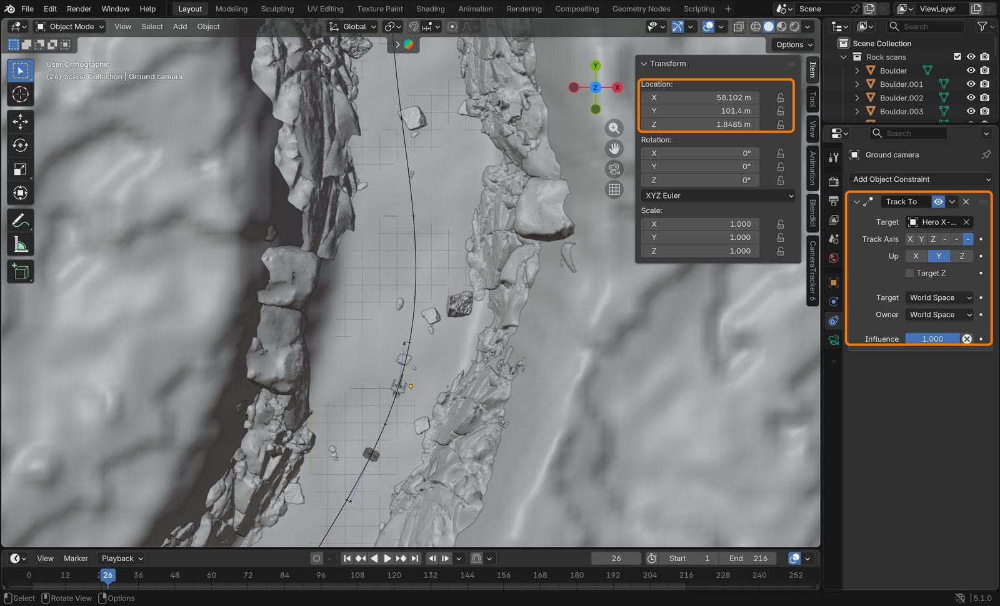
Boxes: the camera’s Location on the canyon floor, and Track To with Target Hero X-wing.It should look like this
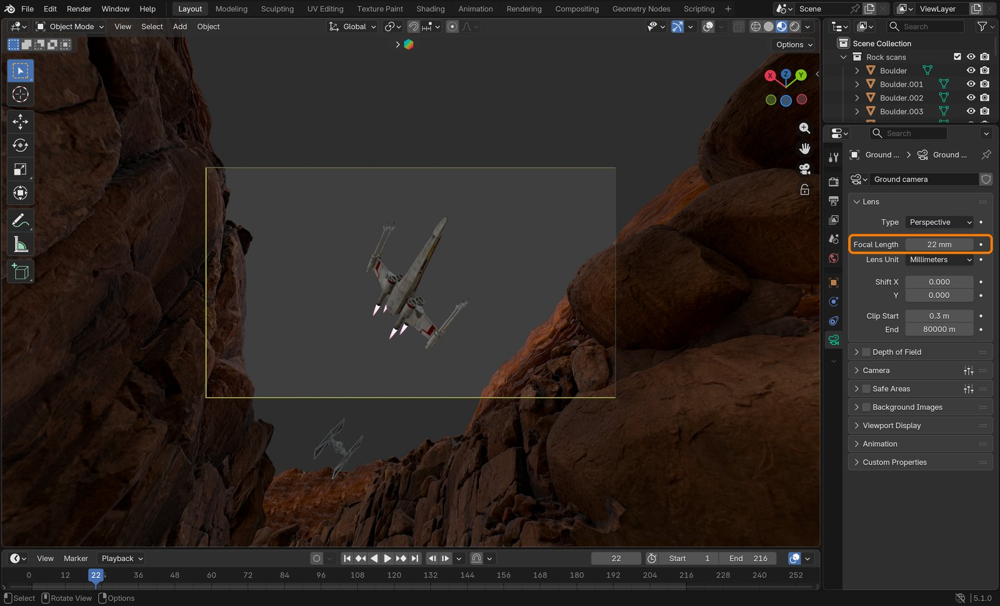
Through the Ground camera at frame 22. Box: Focal Length 22 mm.
2Through the Nose camera at frame 118.
Click
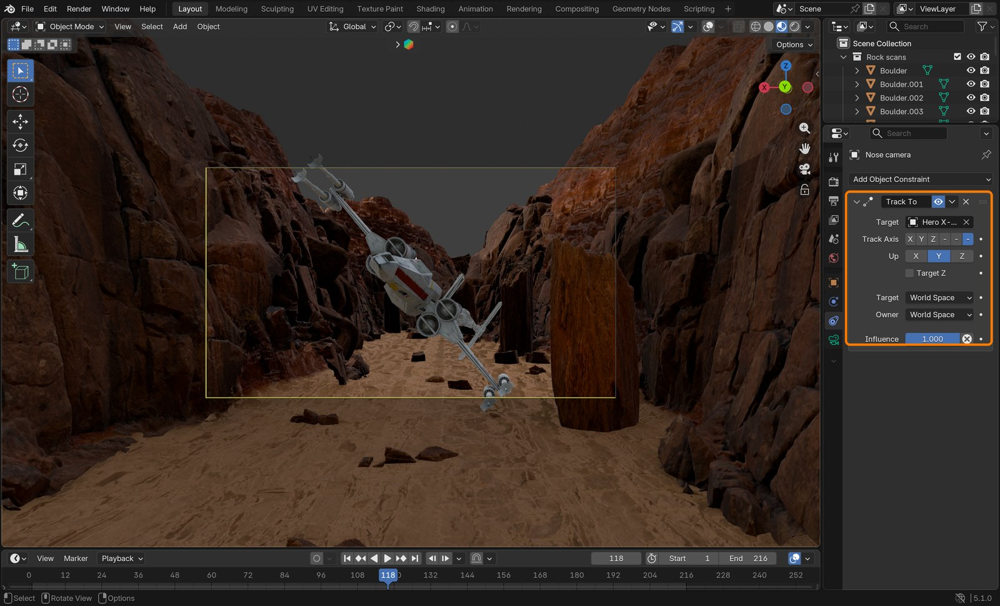
Box: Track To the Hero X-wing. The camera rides ahead and looks back.
3Timeline › Marker › Bind Camera to Markers.
Click
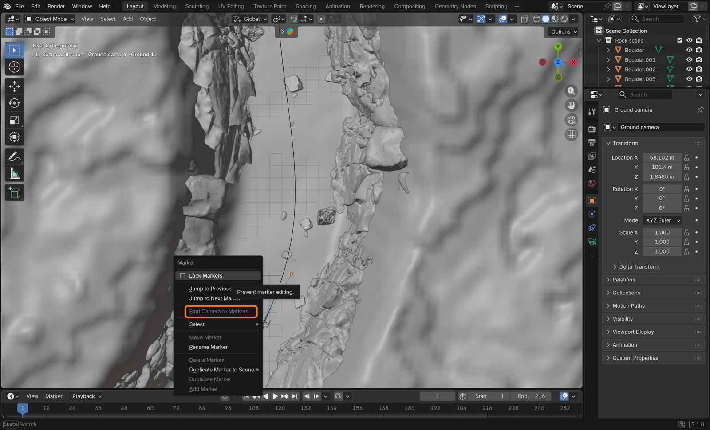
Box: Bind Camera to Markers in the Marker menu.
Object
Setting
Value
Ground camera
Lens / height
22 mm / 1.6 m
Nose dolly
Offset Factor
0.114 → 0.714
Nose camera
Location (child of dolly) / lens
−3.5, 0, 1.2 / 55 mm
Markers
Frames
1 Ground · 46 Chase · 98 Nose · 136 Chase
What went wrong when we built the demo: our first hit frame was wrong. The first red bolt clipped a rock one frame after it was fired, and we took that as the hit (frame 147). The fighter was really hit at 155, so the break-up started eight frames early. Watch which object each bolt lands on.
STEP CHECKLIST
GLOSSARY
Marker: A flag on a frame in the timeline
Cut: An instant change from one camera to another
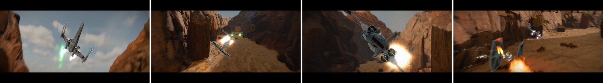
One take, three cameras: ground (frame 20), chase (62), nose (118), chase again for the kill.
WHYOne long chase shot gets dull after four seconds. A new angle every two or three seconds keeps the speed up, and each camera does a different job: the ground camera shows speed, the chase shows the hunt, the nose camera shows the danger.
CHECKPlaying through the camera, the view cuts four times and the ships are in frame in every shot.
FIXBind Camera to Markers is greyed out? The mouse must be over the Timeline, with a marker selected and a camera as the active object.
WORKED EXAMPLE · DIFFERENT OBJECTMulti-camera animation (and every game cutscene) is edited this way inside the 3D program before rendering.
STRETCH (AFTER THE CHECK PASSES)Add a fourth camera high on the canyon rim looking down for one second.
Method basis: B2. Values and sequence are authored for this project.
10
Render the beauty pass
IN SHORTCheck in Rendered view; EEVEE + motion blur; PNG RGB to //dog/beauty/b_; Render Animation; count files.
Lights off. Open your main file again, Save As dogfight_glow.blend. World › Strength 0. In the Outliner click the camera icon next to Sun, Explosion flash and Planet to hide them from renders.
View Transform Standard, Motion Blur on, output //dog/glow/g_. Render Animation. You now have three folders of 216 frames.
Action by action: what to click (orange boxes), and what you should see
1View Layer properties › Passes › Mist.
Click
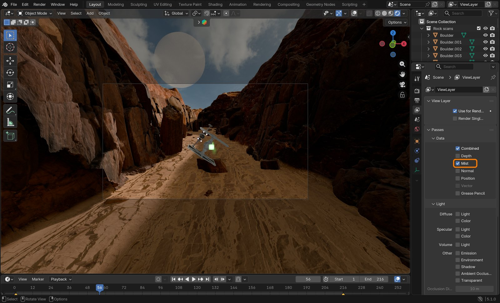
Box: Mist ticked.It should look like this
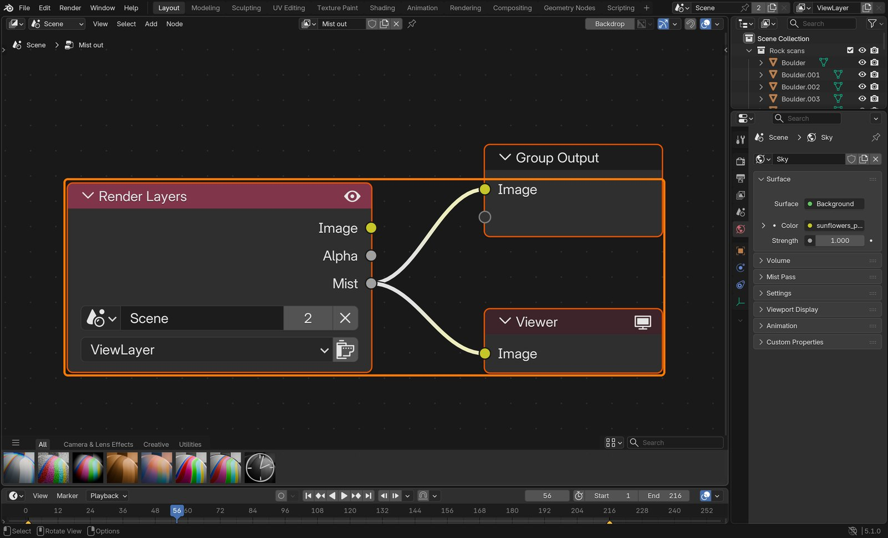
Compositor: Render Layers’ Mist socket into Group Output (box).
2Lights off: World Strength 0, Sun and Planet hidden.
Click
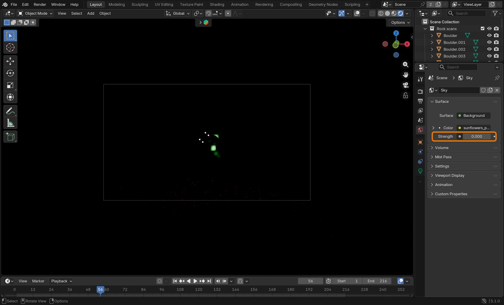
Box: Strength 0.000. Only the engines and a bolt are visible.
Wrong vs right
Wrong
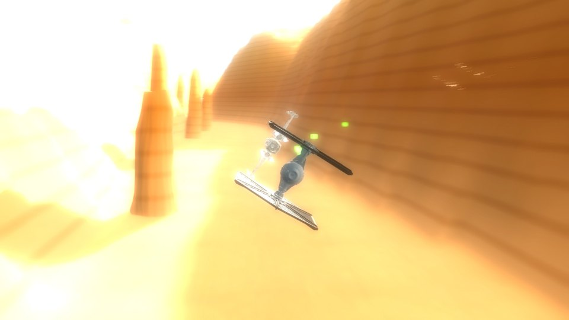
Glow made from the beauty pass: the bright sky and sand glow too and the frame goes white.Right
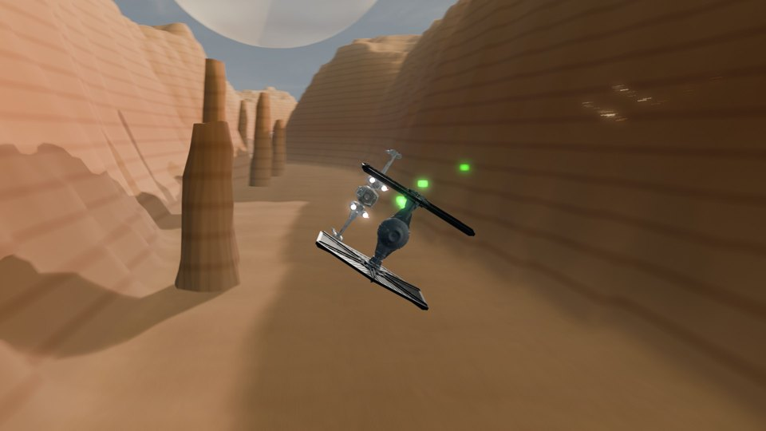
Glow made from the lights-off pass: only lasers and engines glow.
What went wrong when we built the demo: our first glow, made from the whole picture, turned the frame white twice. Our first lights-off pass also made the planet glow, because its material has a little emission: hide it.
STEP CHECKLIST
GLOSSARY
Mist pass: A grey image of distance from the camera
Pass: One layer of information from a render
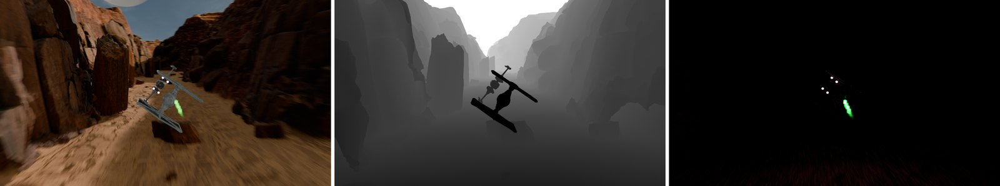
Frame 56 as three passes: beauty, mist (white is far), lights-off glow (only what emits light).
WHYMist tells the compositor how far away each pixel is. The lights-off pass isolates everything that glows, so glow can be added to those things only.
CHECKdog/mist: grey frames, darker near the camera. dog/glow: black frames with only bolts, engines and flashes.
FIXMist frames all white? Depth is too small: 1400 m. Glow frames show the canyon? A light is still on, or World Strength is not 0.
WORKED EXAMPLE · DIFFERENT OBJECTA car advert uses a reflection pass and a shadow pass the same way.
STRETCH (AFTER THE CHECK PASSES)Render an “ambient occlusion” pass and try it as a Multiply layer later.
Method basis: B3. Values and sequence are authored for this project.
Session D · Lesson 4 · After Effects
Stack the shot in After Effects.
Import the three passes and build the picture back up: haze where it is far, glow where it is hot.
TODAYRecall (5 min), import and make the comp (15 min), haze with a track matte (25 min), glow (25 min).
12
Import the passes and make the composition
Recall first (from last lesson, no peeking):
Name the three passes and what each shows.
Why is the glow made from the lights-off pass and not from the beauty pass?
What does a path starting with // mean in Blender?
Say or write your answers, then check them against your file.
IN SHORTImport three PNG sequences; interpret at 24 fps; comp from the beauty pass; rename.
READ ALOUD
DOCUMENT: New After Effects project dogfight_comp.aep SELECT: The three PNG sequences TOOLS / ROUTE: File › Import › File · PNG Sequence · Interpret Footage · drag to the New Composition button
After Effects › File › Import › File. Open dog/beauty, click b_0001.png, tick PNG Sequence, Import. Repeat for dog/mist and dog/glow.
Select all three in the Project panel, right-click › Interpret Footage › Main › frame rate 24.
Drag the beauty sequence onto the New Composition button at the bottom of the Project panel. Rename the comp Canyon Dogfight.
Duplicate the layer (Ctrl+D), name the copy 8 Glow wide: Blur Radius 45, Opacity 70%.
Scrub to a frame with bolts. Turn both glow layers’ eyes off and on to compare.
Action by action: what to click (orange boxes), and what you should see
1The glow layer in Add mode with Fast Box Blur.
Click
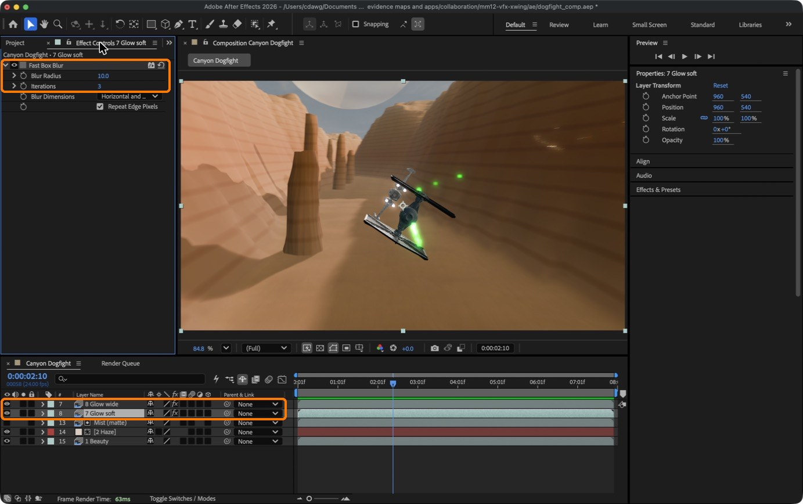
Boxes: Mode Add in the timeline, and Fast Box Blur in Effect Controls.
STEP CHECKLIST
GLOSSARY
Add: A blend mode that adds light
Fast Box Blur: A quick, smooth blur effect
WHYReal glow is a tight bright core plus a wide soft halo. Two blurred copies in Add mode build exactly that, and because the pass contains only light sources, nothing else can blow out.
CHECKBolts and thrusters have a soft halo; the sky and sand look the same as before.
FIXWhole frame brightens? You used the beauty sequence by mistake. Black box over the picture? Mode is still Normal.
WORKED EXAMPLE · DIFFERENT OBJECTNeon signs, headlights and phone screens get the same two-layer glow.
STRETCH (AFTER THE CHECK PASSES)Tint the wide glow with Effect › Color Correction › Tint.
Method basis: A2. Values and sequence are authored for this project.
Session E · Lesson 5 · After Effects
Explosion, flare and finish.
Real filmed fire goes on the wreck. Then the camera layers: flare, grade, vignette and bars.
Which blend mode did the glow layers use, and why?
Why two glow layers and not one?
Say or write your answers, then check them against your file.
IN SHORTImport three clips; start on the hit; position + scale keyframes following the wreck; duplicate in Screen; sparks in Add; debris.
READ ALOUD
DOCUMENT: Canyon Dogfight comp SELECT: Fireball_Wide_05, Sparks_03, Debris_Flying_02 TOOLS / ROUTE: Import · [ key · P and S · stopwatches · Mode
Import Fireball_Wide_05.mov, Sparks_03.mov and Debris_Flying_02.mov from the class Action Essentials folder. Drag the fireball in below the glow layers. Name it 3 Fireball.
Go to your hit frame. With the fireball layer selected press [ so the clip starts there, then drag the layer bar 7 frames left so the flame is already visible on the hit.
Press P, then Shift+S. On the hit frame drag the fireball onto the fighter and scale it to cover it (about 85%). Click both stopwatches.
Every 2–4 frames, move and scale it so it stays on the wreck as the camera passes. It should grow quickly: about 85% at the hit, 300% twenty frames later.
Duplicate it (4 Fireball 2): Mode Screen, start 3 frames later, rotate 140°, a little smaller. Add Sparks (Mode Add) and Debris (Normal) the same way, starting on the hit.
Action by action: what to click (orange boxes), and what you should see
1The fireball layer selected, 8 frames after the hit, with Position and Scale keyframes.
Click
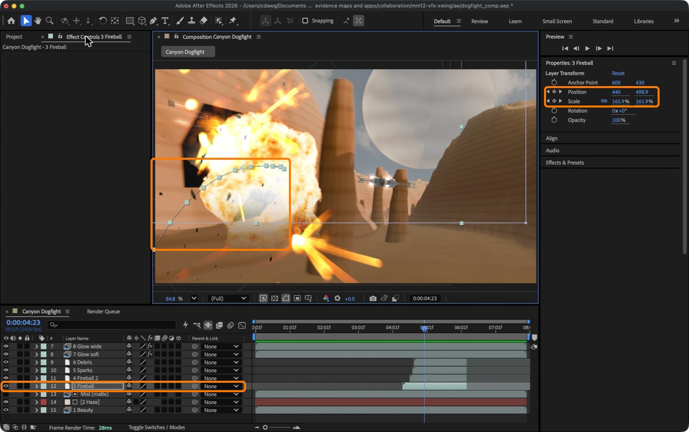
Boxes: the fireball in the viewer and its keyframes in the timeline.
What went wrong when we built the demo: in the demo the clips were positioned by a script that read the wreck’s screen position from Blender. Our first try put the fireball below the fighter, because the flame is not in the middle of the clip: set the Anchor Point to the centre of the flame (576, 288).
STEP CHECKLIST
GLOSSARY
Stock footage: Pre-filmed elements you can add to a shot
Screen: A blend mode that brightens, softer than Add
WHYThe clip has no idea where your camera is. Keyframing position and scale to the wreck is what glues a flat piece of footage into a 3D shot.
CHECKFrom the hit frame the fireball sits on the fighter and swells as the camera flies past; sparks and debris fly out of it.
FIXFireball slides off the wreck? Add a keyframe on that frame. Hard straight edge? You scaled the clip so its frame edge shows: move it or mask it (Q).
WORKED EXAMPLE · DIFFERENT OBJECTMuzzle flashes, rain, dust hits and smoke are all added like this.
STRETCH (AFTER THE CHECK PASSES)Add Smoke after the fireball fades, in Normal mode at 60%.
Method basis: V1 · A2. Values and sequence are authored for this project.
16
Lens flare, grade, vignette and letterbox, then render
IN SHORTFlare solid in Add, centre keyed to the sun; adjustment layer grade + noise; vignette; letterbox; render H.264.
READ ALOUD
DOCUMENT: Canyon Dogfight comp SELECT: Three solids and an adjustment layer TOOLS / ROUTE: Effect › Generate › Lens Flare · Layer › New › Adjustment Layer · Composition › Add to Render Queue
New black solid, 10 Lens flare, Mode Add. Effect › Generate › Lens Flare. Drag Flare Center onto the sun at the top of frame. Key it every 10 frames to follow the sun; key Flare Brightness to 0 whenever rock covers the sun.
New black solid, 12 Vignette: double-click the Ellipse tool to add a mask, tick Inverted, Mask Feather 420, layer Opacity 45%.
Two black solids 1920 × 138, one at the top and one at the bottom: 13 Letterbox.
Composition › Add to Render Queue. Output Module: H.264. Output To: Dogfight_YOURNAME.mp4. Render.
Action by action: what to click (orange boxes), and what you should see
1The flare solid with the Lens Flare effect.
Click
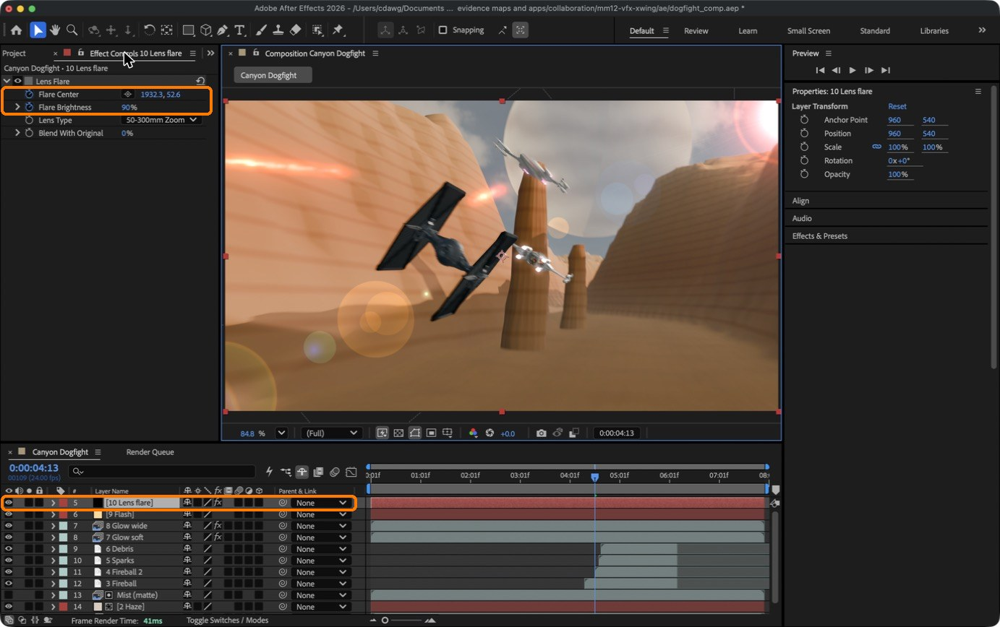
Boxes: Flare Center and Flare Brightness in Effect Controls.It should look like this
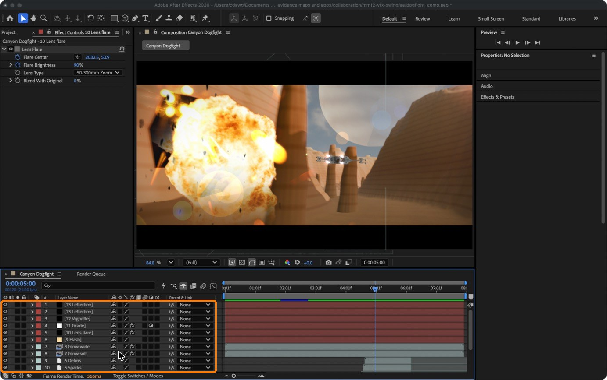
The finished stack: 13 layers.
2Add to Render Queue and render.
Click
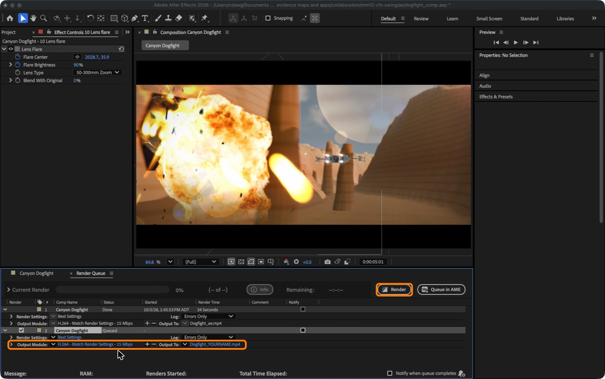
Box: Output Module and the Render button.
STEP CHECKLIST
GLOSSARY
Adjustment layer: A layer whose effects apply to everything below it
Vignette: Darker corners
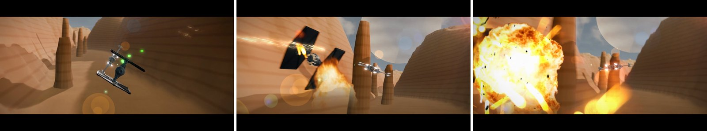
Three frames of the finished demo.
WHYThese layers imitate a real camera and a colourist. They are what turns a clean computer picture into something that looks filmed.
CHECKA finished MP4: flare when the sun is in view, richer colour, soft dark corners, cinema bars.
FIXFlare visible through rock? Key Flare Brightness to 0 there. Colours look radioactive? Halve the Vibrance.
WORKED EXAMPLE · DIFFERENT OBJECTEvery finished advert or trailer shot has a grade and usually grain.
STRETCH (AFTER THE CHECK PASSES)Add camera shake on the hit: an adjustment layer with Transform, and wiggle(12, 14) on Position for 12 frames.
Method basis: A2. Values and sequence are authored for this project.
Session F · Lesson 6 · Blender + After Effects
The director’s cut.
You have built the demo. Now change it on purpose and defend the change.
TODAYRecall (5 min), read the card and plan (10 min), make the change and render (40 min), screen and explain (15 min).
17
Practical check: the director’s change
Recall first (from last lesson, no peeking):
In which program would you change the flight path? The haze colour? The size of the fireball?
What must be re-rendered if you move the sun?
What is the rule for how strong a finishing effect should be?
Say or write your answers, then check them against your file.
IN SHORTRead the card; decide program and passes; change copies; render; explain three decisions; credit.
READ ALOUD
DOCUMENT: Copies of your Blender and After Effects files SELECT: Whatever the card requires TOOLS / ROUTE: Your own decisions
Read your director’s card (below). Decide whether it is a Blender change, an After Effects change, or both, and which passes must be re-rendered.
Work in copies. Re-render only the passes the change affects.
Render the new MP4. Keep the original too.
Screen both. Explain one flight decision, one pass decision and one compositing decision.
Credit the models and footage (Video Copilot), the sky (Poly Haven) and the PewPew add-on.
Card
The director says
1 · Dusk
“Make it dusk: orange haze, long shadows, brighter lasers and engines.”
2 · The other one dies
“The fighter wins. The X-wing takes the hit and breaks up.”
3 · Closer
“Too safe. Fly lower and closer to the walls, and hit a rock spire with a stray bolt.”
4 · Bigger bang
“The explosion is small. Three fireballs, smoke that hangs in the canyon, and camera shake.”
Independent evidence: the main achievement evidence for this tutorial.
STEP CHECKLIST
GLOSSARY
Director’s card: A change request you must deliver
WHYKnowing which program and which pass a change belongs to is the real skill: it is the difference between a five-minute fix and a re-render of everything.
CHECKA second MP4 that meets the card, with a three-decision explanation and credits.
FIXStuck? Name the layer or pass the card touches first. (Independent step: the Coach can explain tools but not decide your changes.)
WORKED EXAMPLENone today: this is independent evidence. Use the success criteria.
STRETCH (AFTER THE CHECK PASSES)Take two cards at once.
Method basis: B3 · A2. Values and sequence are authored for this project.
Before you submit
Student QA.
Evidence conversation
Keep it short and specific.
SENTENCE FRAMESThe gap holds because ___. · My hit frame is ___ because ___. · I made the glow from the ___ pass because ___. · For the director’s card I changed ___ in ___ and re-rendered ___.
V1 Video Copilot (Andrew Kramer). Star Pack models (free) and Action Essentials stock footage (licensed; your teacher supplies it). https://www.videocopilot.net/
Figures marked Illustration are drawn, not screenshots. Step values are starting points authored for this project. Draft for teacher review; not yet classroom-piloted.